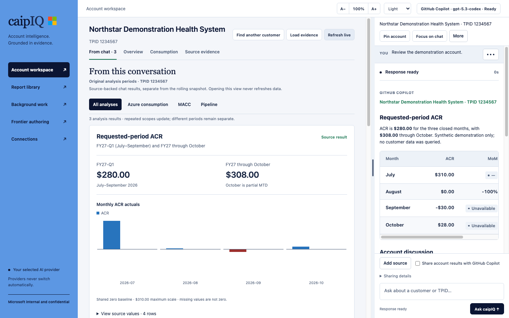

Account intelligence.
One desktop app.
Ask about your customers. Explore the evidence. Bring a clearer story to your next account conversation.
caipIQ brings account questions, consumption insights and leadership reports into one workspace for Microsoft account teams. No terminal required.
Choose your downloadInternal beta app for Microsoft account teams
The conversation and the evidence,
in the same workspace.
Read the answer, explore available charts and keep the source details close.

From download to your first question.
No Git, Python, Node.js, Azure CLI or Copilot CLI installation is needed.
-
Install the app
On Windows, run the .exe. On Mac, open the .dmg and drag caipIQ into Applications. Use only a build your organization's device policy permits.
-
Connect your accounts
Open Connections. Connect your Microsoft work account for data, then choose GitHub Copilot or Local AI. Local AI downloads require your approval. M365 AI is experimental and needs organization-specific configuration.
-
Ask a customer question
Return to Account workspace. Include the customer name; ambiguous matches are resolved in the conversation. Reports open from chat or Report library.
“Show the MACC scorecard for <customer>.”
“Create a leadership brief for <customer>.”
A few things to know.
Installing the app grants neither Microsoft data permissions nor an AI license. Your selected provider never switches automatically.
For access or beta feedback, contact the maintainer who invited you. Do not send customer data, credentials or sensitive screenshots.
Who can see my account data?
Source access is bounded by your Microsoft identity and source permissions. Distribution-repository access permits downloads, not application-source or account-data access.
Does account evidence go to my AI provider?
Only with the app's explicit evidence-sharing consent. Your questions and explicitly approved attachments may still be sent to that provider. Local AI runs its model on your computer.
What is stored on my computer?
The app keeps an encrypted local snapshot and protects saved chats separately. Generated reports and exports are not app-encrypted. Follow customer-data policies.
Why is a source unavailable?
Check Connections, your source permissions and VPN requirements. A missing result does not prove that the account has no consumption, commitment or support.
How do PDF export and app updates work?
PDF conversion requires LibreOffice on your computer. App updates require a new installer; there is no automatic update from repository changes.